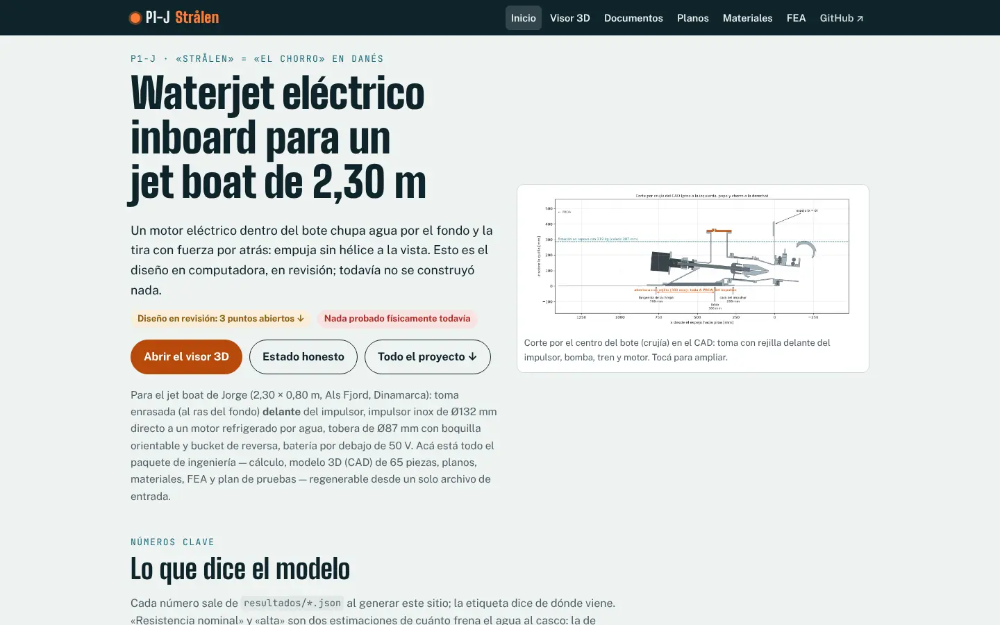

← All projects
Engineering
P1-J electric waterjet
An inboard electric waterjet for a 2.3 m jet boat: sizing, parametric CAD, FEA and a 3D viewer. Designed, not yet built.
The project
A boat owner wanted an electric waterjet for his small jet boat. I redesigned his sketch so it can actually work: a flush intake fully ahead of the impeller, a stainless impeller driven directly by a water-cooled motor, a steerable nozzle and a mandatory reverse bucket, all under 50 V.
The whole engineering package (calculations, parametric CAD, drawings, bill of materials, FEA and test plan) regenerates from one input file. The site is in Spanish and says honestly what the model shows and what only a water test can decide.
What I did
- Sizing model for thrust against hull resistance, cavitation and battery endurance.
- Parametric CAD with automatic interference checks, drawings and a bill of materials.
- FEA of the intake, steering and reverse parts, with the weak point stated openly.
- Honest recommendation: the model shows the hull, not the propulsion, is the main risk, and that buying an off-the-shelf pump is cheaper.
Under the hood
Pythonsizing, comparison of architectures (Monte Carlo), BOM and the site build.
CadQuery + Blenderparametric parts, interference checks and renders.
JavaScriptthe 3D viewer on the project site: assembled, exploded and part by part.
Live preview

The live project site (Spanish), with the 3D viewer.
Renders, results and photos